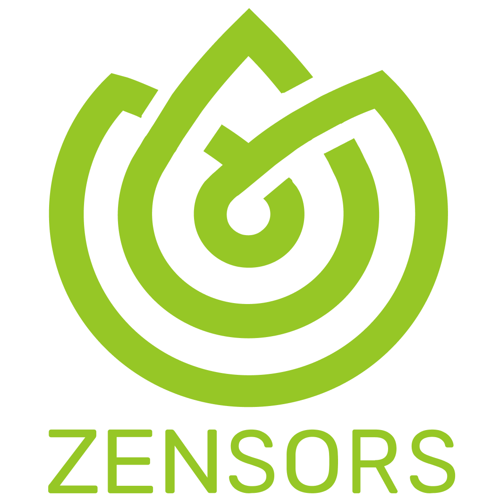
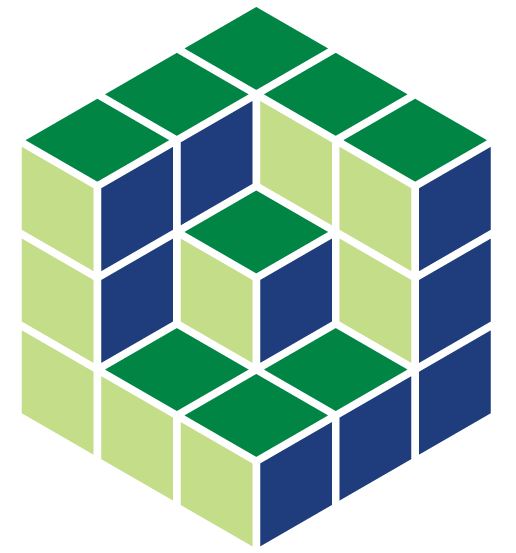
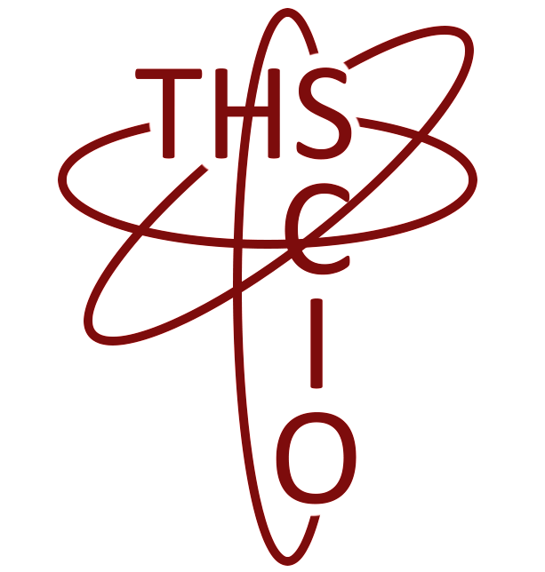
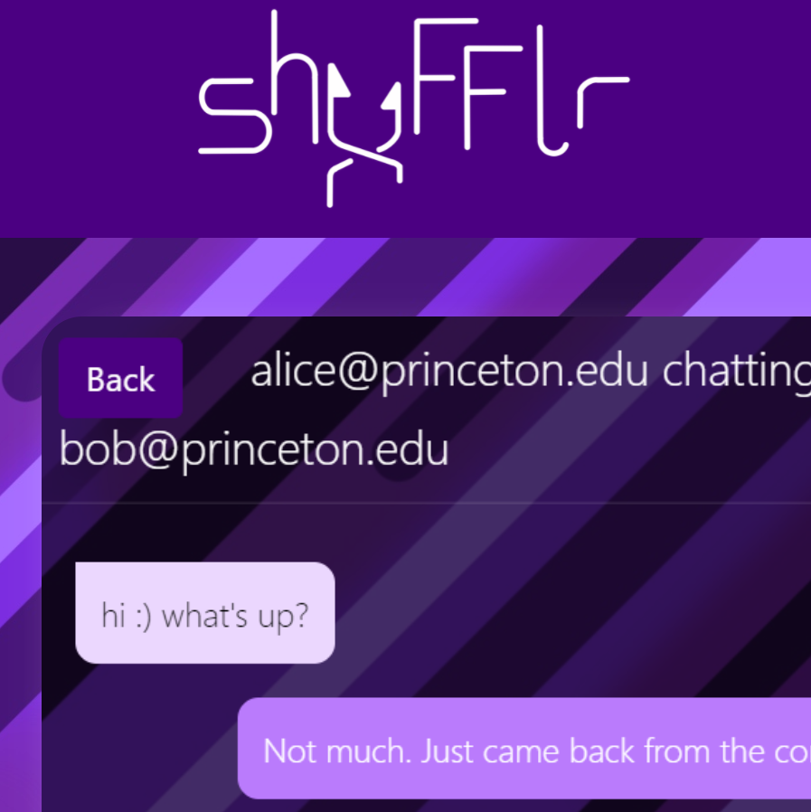
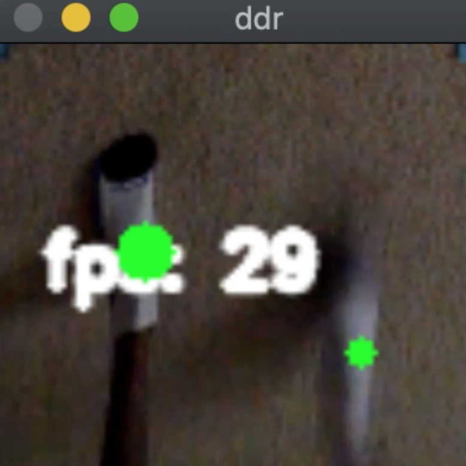
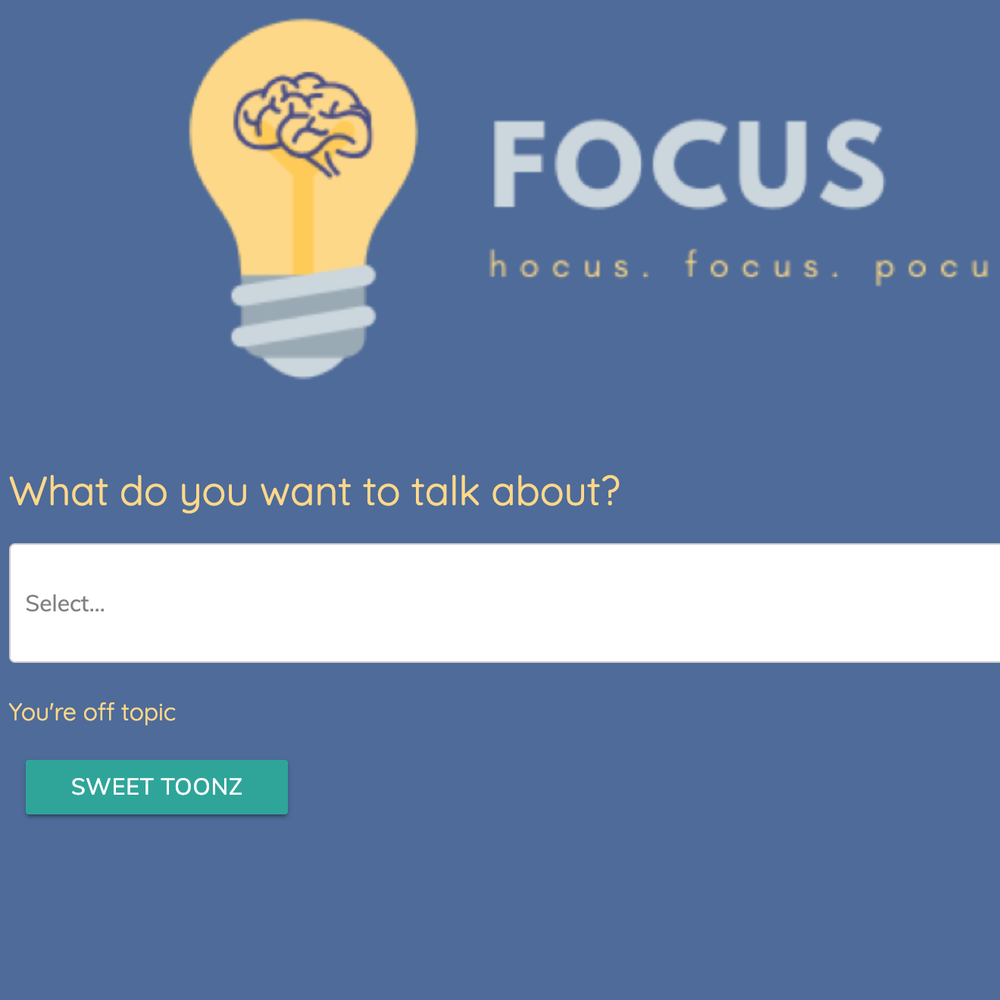
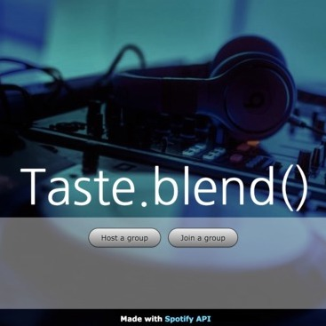
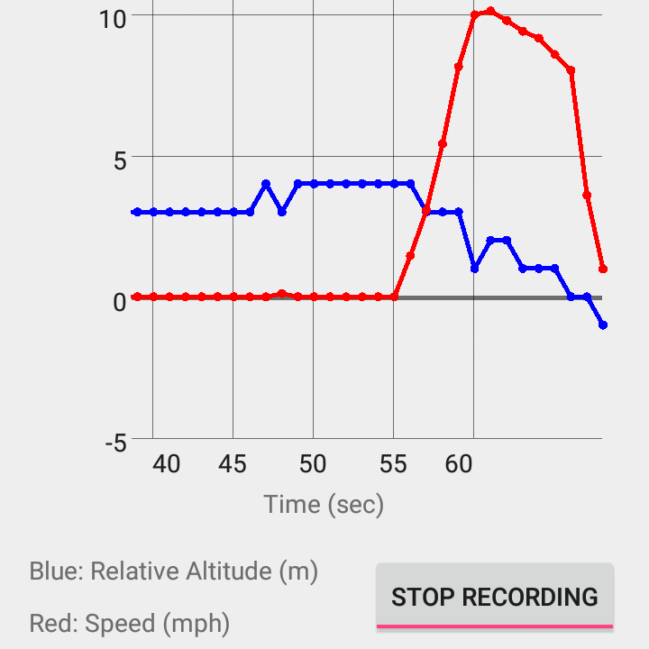

December 2020 - present
I've been working in this lab for a while now and have been learning a lot about modern deep learning under the guidance of Martin Li and Prof Deva Ramanan. So far, I've developed a novel non-uniform subsampling method that exploits spatial and temporal biases in object location to increase video object detection performance in latency intensive settings like robotics and autonomous vehicles. Our work was recently published in International Conference on Computer Vision (ICCV)! Excited to continue my work here on even more projects!
June 2021 - August 2021
My second summer on NYC streets! This time around, I spent my time learning more about the finance industry and quantitative research with some wonderful mentors who guided me through the process. I designed a cryptocurrency trading bot from scratch by discovering market signals and developing an order execution system. In the second half, I analyzed a news sentiment dataset and found a profitable macroeconomic signal that trades forex and international equity index futures.

June 2020 - August 2020
This summer I spent at home *cough corona cough* working remotely for Zensors, a startup providing computer vision as a business intelligence service. I worked on the machine learning pipeline, writing a metrics and visualization library and implementing a probability-based tracking model, which significantly outperformed the previous system in high density areas. I met some more wonderful mentors and got to experience first-hand the so-called startup life.
June 2019 - August 2019
I spent this summer at Google's New York City office. It was a summer full of wonderful new experiences -- I feel like I learned and grew so much. I designed and implemented a full stack end-to-end feature to expose a control center for a distributed caching server system on the Google Ads platform. I used Java for the backend and Angular TypeScript for the frontend, learning many best coding practices for both. I also connected with a lot of interns and full-timers, making good friends and learning what life in the industry after college would be like.

May 2018 - August 2019
I respond to questions, clarify concerns, and provide encouragement and guidance to foster student understanding of course concepts. Classes, ranging from 40 to 60 students in size, are run on a weekly basis through a live online interface. Over the course of my time here, I've taught classes ranging from Counting and Probability to Number Theory to Programming with Python. Assisting with these classes is an incredibly fulfilling activity for me -- the perfect way to end a busy day.
August 2015 – December 2017

May 2016 – May 2018

Random chat app designed to better connect college communities. Made with React.js, Node.js, and MySQL. Deployed to AWS, and currently serving Carnegie Mellon and Princeton students.

A computer vision webcam-based DDR controller for when you want to play without having a fancy mat or arcade setup. Built with OpenCV and Pynput; compatible with the StepMania DDR simulator.
A mario-kart style battle royale fitness game! Runners from around the globe can join a match and run with others, but only one "survives" and wins each round. Built with React Native, Node.js, and Socket.io.

At a team meeting and keep getting distracted? This is a productivity web app designed to keep you on track. Designed with Python Flask and React.js with the Google Cloud Speech to Text and NLP APIs.

A web app for that awkward moment when you can't decide what to play for your group of friends with diverse tastes. Designed with Node.js, Express.js, HTML, CSS, JavaScript, and jQuery using the Spotify Web API.

A simple Android app that tracks location, speed, and elevation and outputs theoretical energy usage in order to determine the fuel efficiency. Built with Android Studio using Java and XML.